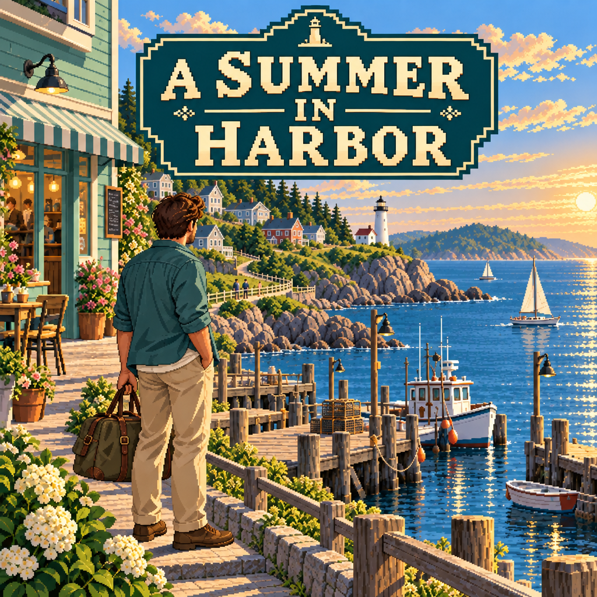

从问候，到被记住。
隔几个游戏日再来聊聊，认真兑现约定，把共同经历带回来。Mara、Avery、Samira的关系，会从陌生逐步走向亲近。

先看一眼海湾
实际游戏画面 · 横滑浏览，点开放大
穿过街巷，走到灯塔旁。靠近感兴趣的人与物，再决定要不要停下来。
把种好的罗勒送给Theo。一次小小的交货，也能成为你与小镇的联系。
种植、浇水，再回来收获。菜畦会跟着游戏里的时间，慢慢长大。
让日常，长成故事
隔几个游戏日再来聊聊，认真兑现约定，把共同经历带回来。Mara、Avery、Samira的关系，会从陌生逐步走向亲近。
从照料菜畦到给Theo的厨房供货。种下的东西、做过的小事，会成为行囊里的收获和旅程中的记录。
听邻居聊自己的生活，观察猫、海鸥与岸蟹。见过的人、留下的发现，慢慢积成属于你的海湾生活。
海湾也在持续扩展，新的居民与日常玩法陆续加入。
游戏时间在游玩时推进；暂停或离线时，时间停下来。
先从一个名字开始
从肖像，到你在游戏里见到的模样。
常见出没时段，以游戏时间为准。
正在翻开居民册…
居民资料暂时没能打开。请刷新页面后再试。
带着一点好奇心，走进这个持续生长的海湾。
走进海湾